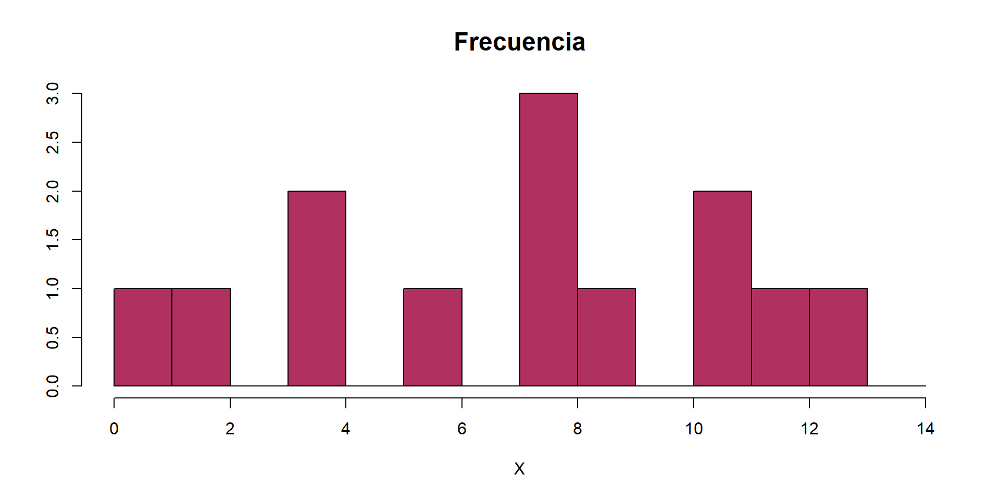
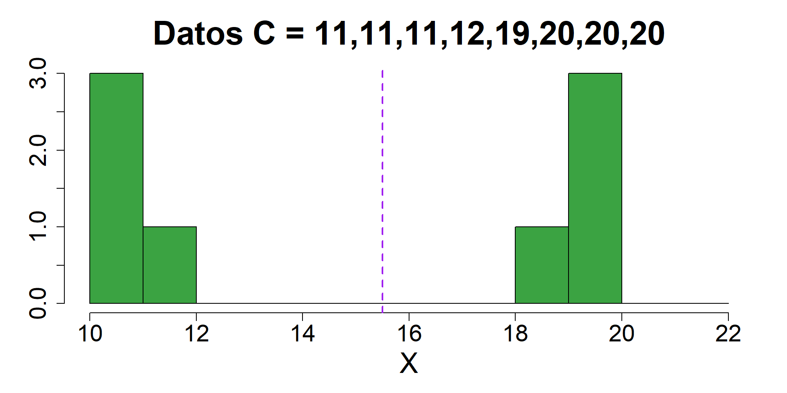

Analítica de Datos
Estadísticos descriptivos
Carlos Cardona Andrade
Tabla de contenido
Medidas de:
tendencia central
Medidas de tendencia central
El propósito principal de la estadística descriptiva es organizar y resumir un conjunto de valores.
El método más común de hacer esto es encontrar un valor puntual que defina el valor promedio y sea representativo a toda la distribución.
Usualmente, este valor identifica el centro de la distribución.
Definición
Un estadístico de tendencia central proporciona una estimación de la puntuación más representativa para un grupo de valores.
La media
Definición
Es la suma de todos los valores dividida entre el número de valores observados.
También es conocido como el promedio aritmético.
La media de una población se identifica por la letra griega \(\mu\). Por otro lado, \(\bar{X}\) es la notación acostumbrada para la media muestral.
\[ \bar{X}=\dfrac{\sum{X}}{n} \]
Definiciones alternativas de la media
- La primera alternativa es pensar la media como una medición de ``partes iguales’’. Es decir, la cantidad que cada recibe cuando el total (\(\sum{X}\)) es dividido entre todos los individuos (n).
- 6 estudiantes se encuentran 180 mil pesos en la calle. Si quisieran dividir el total de la plata equitativamente, ¿cuánto recibiría cada estudiante?
- Ahora supongamos que los 6 estudiantes invirtieron su dinero obteniendo una ganancia de \(\bar{X}=\)$500 por estudiante. ¿Cuánto fue el total de ganancia para todo el grupo?
Definiciones alternativas de la media
- La segunda alternativa es considerar a la media como un punto de equilibrio.
- Imaginemos una muestra constituida por \(n\)=5 valores (1,2,6,6,10). Además, para esta muestra \(\bar{X}=5\)
| Valor | Distancia de la media |
|---|---|
| 1 | 4 abajo de la media |
| 2 | 3 abajo de la media |
| 6 | 1 arriba de la media |
| 6 | 1 arriba de la media |
| 10 | 5 arriba de la media |
- Abajo de la media: 4+3=7
- Arriba de la media: 1+1+5=7
- La media equilibra las distancias de la distribución.
Características de la media
- Cambiar cualquiera de los valores cambia la media.
- Adicionar un nuevo valor o sustraer un valor existente, cambia la media salvo que el valor sea igual a la media.
- Si una constante se le suma (o resta) a cada valor en una distribución, la misma constante se le suma (o resta) a la media.
- Si cada valor en una distribución es multiplicado (o dividido) por una constante, la media cambia de la misma manera.
Debilidades de la media
- Cuando la distribución tiene valores extremos, la media no es una buena medida representativa.
- Imaginemos un conjunto de valores \(X= \{2, 3, 4, 5, 6, 7, a\}\) donde \(a\) puede ser 5, 10, 15 o 20.
La mediana
Definición
Es el valor que denota el punto medio en una distribución ordenada. En otras palabras, 50% de los valores están por debajo de este valor.
- Para calcular la mediana, lo primero es ordenar los datos de menor a mayor. Luego se divide entre 2 el tamaño de la muestra \(n\) y se suma 0.5 al valor obtenido. Esto nos dará la posición de la mediana.
- Si el \(n\) es impar, la mediana será el valor de la mitad de la distribución.
- Si el \(n\) es par, la mediana será el promedio entre los dos valores de la mitad.
Mediana - Datos Pares
Mediana - Datos Impares
Debilidades de la mediana
- Dos distribuciones pueden tener la misma mediana aun cuando estén compuestas de puntuaciones muy diferentes. \[Notas_1= 39 \quad 51 \quad 77 \quad 78 \quad 81\] \[Notas_2= 74 \quad 75 \quad 77 \quad 94 \quad 98\]
- A pesar de que la mediana es insensible a los valores, es muy sensible al tamaño de la muestra.
- Por ejemplo, si dos notas se añaden al conjunto 1: \[Notas_1= 34 \quad 36 \quad 39 \quad 51 \quad 77 \quad 78 \quad 81\]
La moda
Definición
En una distribución de frecuencia, la moda es el valor o categoría que más se repite.
- Aunque una distribución sólo puede tener una media y una mediana, es posible que tenga más de dos modas.
- La existencia de dos modas, a menudo indica que dos grupos diferentes existen dentro de la misma población.
- La moda es representativa para variables nominales y ordinales. Con variables de razón, es útil acompañada de la media y la mediana.
Medidas de:
dispersion
Medidas de dispersión
La dispersión mide las diferencias entre los valores en una distribución
Una buena medida de dispersión cumple dos objetivos:
Describir la distribución. Específicamente, si los valores están agrupados entre sí o si están esparcidos a lo largo de una gran distancia.
Medir qué tan bien un valor individual representa toda la distribución.
El Rango
Definición
Es la distancia cubierta por los valores en una distribución, es decir, la distancia entre menor y el mayor valor.
- Se calcula de la siguiente manera: \[Rango=X_{max}-X_{min}+1\]
- En ocasiones es más útil reportar los valores mínimo y máximo que reportar el rango.
El rango
- Como el rango no tiene en cuenta todos los valores de la distribución, no es una medida precisa de la variabilidad de toda la distribución.
\[X=1, 2, 4, 4, 6, 8, 8, 8, 9, 11, 11, 12, 13\]
El rango
Ambas distribuciones tienen el mismo rango.
El rango es muy sensible a los valores atípicos. ¿Qué pasa con el rango si le agregamos un 50 a los valores en ambas gráficas?
La desviación estándar
Definición
Describe la forma en que los valores de una variable se dispersan a lo largo de la distribución en relación a la media.
- La desviación estándar poblacional se denota \(\sigma_X\), mientras que \(s_X\) es la notiación para la desviación estándar muestral.
- Se calcula siguiendo la fórmula: \[s_X=\sqrt{\dfrac{\sum{(X-\bar{X})^2}}{n-1}} \]
Cálculo de la desviación estándar
- Calcular la media.
- Determinar el valor de desviación, o distancia de la media, para cada valor individual.
- Para una distribución con una media de \(\bar{X}\)=50, si el valor X=53, el valor de desviación es: \[X-\bar{X}=53-50=3\]
- Si el valor X=45, el valor de desviación será: \[X-\bar{X}=45-50=-5\]
- El valor de desviación nos dice la distancia del valor X a la media y la dirección de esa distancia.
Cálculo de la desviación estándar
- Elevar al cuadrado los valores de desviación y sumar esos cuadrados. \[Suma \quad de \quad cuadrados=\sum{(X-\bar{X})^2}\]
- Dividir la suma de cuadrados entre \(n-1\).
- Dado que la suma de cuadrados depende del número de observaciones, no es una medida estándar.
- Por lo tanto, se promedia la suma de cuadrados por el número de valores menos 1.
- El resultado de esto es llamado varianza. Cuyo símbolo es \(\sigma_X^2\) o \(s_X^2\).
\[s_X^2=\dfrac{\sum{(X-\bar{X})^2}}{n-1}\]
Cálculo de la desviación estándar
- Sacar raíz cuadrada a la varianza para obtener la desviación estándar.
- Aunque la varianza es muy usada en algunos métodos inferenciales, el concepto de distancia al cuadrado no es una medida descriptiva intuitiva.
- Por ejemplo, mencionar que entre Bogotá y Medellín hay 175561 kilómetros cuadrados no resulta informativo.
- Por el contrario, si la sacamos raíz \(\sqrt{175561}=479\) kilómetros, el dato es mucho más significativo.
Un ejemplo
| Valor de X | Desviación | Desviación\(^2\) |
|---|---|---|
| 1 | -5 | 25 |
| 9 | 3 | 9 |
| 5 | -1 | 1 |
| 8 | 2 | 4 |
| 7 | 1 | 1 |
| \(\bar{X}=\frac{30}{5}=6\) | \(\sum{(X-\bar{X})}=0\) | \(\sum{(X-\bar{X})^2}=40\) |
\[s_X^2=\dfrac{\sum{(X-\bar{X})^2}}{n-1}=\frac{40}{4}=10 \quad s_X=\sqrt{10}=3.16\]
Características de la desviación estándar
- Sumar la misma constante a cada valor, NO modifica la desviación estándar.
- Multiplicar cada valor por la misma constante, aumenta la desviación estándar en la misma proporción.
La desviación estándar vs la distribución de los datos

Noten que las 3 muestras tienen la misma media: \(\bar{X}=15.5\)
Las desvaciones estándar son S=3.33, S=0.92 and S=4.56.
Desviación Estándar - Dispersión gráfica
Medidas de dispersión: Resumen
Entre más dispersos los datos, el rango, varianza y desviación estándar serán más grandes.
Entre más concentrado, serán menores.
Si todos los valores son los mismos (no hay variación), todas las medidas serían cero.
Ninguna medida es negativa.
Mejor utilizar la desviación estándar.
Coeficiente de variación
- Muestra la variación relativa a la media
- Es útil para comparar en otros muestras diferentes
- Utilizado para comparar volatilidad de dos acciones distintas (finanzas)
\[CV=\dfrac{s_X}{\bar{X}}\]
Coeficiente de variación - Ejemplo
- Acciones A: Precio medio: \(\bar{p_A}=50\) y desviación estándar: \(s_A=5\)
\[CV_A=\dfrac{s_A}{\bar{p_A}}*100\% = \dfrac{5}{50}*100\%=10\%\] - Acciones B: Precio medio: \(\bar{p_B}=100\) y desviación estándar: \(s_B=5\)
\[CV_B=\dfrac{s_B}{\bar{p_B}}*100\% = \dfrac{5}{100}*100\%=5\%\]
Coeficiente de varición - Ejemplo
- Acciones A: Precio medio: \(\bar{p_A}=50\) y desviación estándar: \(s_A=5\)
\[CV_A=\dfrac{s_A}{\bar{p_A}}*100\% = \dfrac{5}{50}*100\%=10\%\]
- Acciones C: Precio medio: \(\bar{p_C}=8\) y desviación estándar: \(s_C=2\)
\[CV_C=\dfrac{s_C}{\bar{p_C}}*100\% = \dfrac{2}{8}*100\%=25\%\]
Medidas de:
forma
Sesgo
Mide qué tan asimétricamente están distribuidos los datos.

Sesgo a la izquierda
Distribución Simétrica
Sesgo a la derecha
- El sesgo, como medida de forma, describe cómo se distribuyen los datos
- También se puede hablar de sesgo negativo, nulo o positivo
Cuartiles
Son los valores que dividen un conjunto de datos, ordenados de menor a mayor, en cuatro partes iguales
- El primer cuartil, \(Q_1\), es el valor para el cual el 25% de los valores son más pequeños
- \(Q_2\) es la mediana (50% son menores y 50% mayores).
- Solo el 25% de los valores son más grandes que el tercer cuartil \(Q_3\).
Cuartiles
- Se calculan de acuerdo a la posición en los datos ordenados:
\[Q_1 = \dfrac{n+1}{4}\] \[Q_2 = \dfrac{n+1}{2}\]
\[Q_3 = \dfrac{3(n+1)}{4}\] - Donde \(n\) es el número de valores.
Cuartiles
\[X=11, 12, 13, 16, 16, 17, 18, 21, 22\] - \(Q_1\) está en la posición \(\dfrac{(9+1)}{4}=2.5\)
- Calculamos el promedio de los valores en la posición 2 y 3.
\[Q_1=\dfrac{12+13}{2}=12.5\]
Cuartiles
\[X=11, 12, 13, 16, 16, 17, 18, 21, 22\]
\(Q_2: \dfrac{(9+1)}{2}=5\) posición \[Q_2=mediana=16\]
\(Q_3: \dfrac{3*(9+1)}{4}=7.5\) posición
\[Q_3=\dfrac{18+21}{2}=12.5\]
Diagrama de Caja

Rango intercuartílico
- \(RIC=Q_3-Q_1\)
- Mide la variabilidad del 50% de los datos que están en medio.
- No la afectan los datos extremos (outliers)
Diagrama de Caja - Ejemplo
Diagrama de Caja - Sesgo

Medidas de relación entre dos variables
Relación entre 2 variables numéricas
- Los gráficos de dispersión nos ayudan a visualizar y examinar la relación entre dos variables numéricas.
- Discutiremos dos medidas cuantitativas de esta relación:
- la covarianza
- la correlación
Covarianza
La covarianza mide qué tan fuerte es la relación (lineal) de dos variables numéricas.
La covarianza muestra:
\[cov(X,Y)=\dfrac{\sum_{i=1}^{n}(X_i-\bar{X})(Y_i-\bar{Y})}{n-1}\]
- Solamente mide la “dirección” de la relación.
Interpretación de la covarianza
- La covarianza entre dos variables:
- \(cov(X,Y)>0 \rightarrow\) \(X\) y \(Y\) se mueven en la misma dirección.
- \(cov(X,Y)<0 \rightarrow\) \(X\) y \(Y\) se mueven en dirección opuesta.
- \(cov(X,Y)=0 \rightarrow\) \(X\) y \(Y\) son independientes.
- El defecto de la covarianza es que no indica la intensidad de la relación entre las dos variables
Correlación
- La correlación mide la dirección y la fuerza de la relación lineal entre dos variables numéricas.
\[r=\dfrac{cov(X,Y)}{S_xS_y}\]
Características de la correlación
- \(-1< r < 1\)
- \(r\) no cambia cuando se cambian las unidades de medida de \(X\), \(Y\) o ambas.
- \(r\) no tiene unidad de medida
- Más cerca a –1, más fuerte
la relación lineal negativa. - Más cerca a 1, más fuerte
la relación lineal positiva. - Más cerca a 0, más débil
la relación lineal.